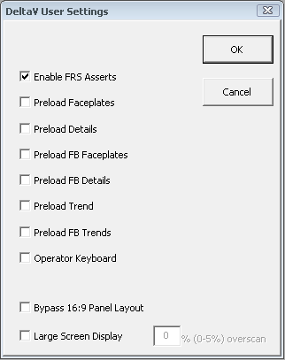

The User Settings dialog
In addition to the User Preferences dialog (under ) and the User_Ref file, you can configure certain functions in DeltaV Operate using the User Settings dialog.
This dialog is opened from the DeltaV Workspace Toolbar by clicking the
User Settings button.


Select the options you want by checking the appropriate boxes.
Enable FRS Asserts - enables the FRS Asserts written for debugging purposes. When not selected, the FRS Asserts are ignored in run mode and can be left in the code for future debugging sessions.
Preload Faceplates - preloads the next module faceplate picture when one module faceplate picture of the same type is opened. That is, if you have LOOP_FP opened, LOOP_FP_1 loads in the background making the display time quicker.
Preload Details - preloads the next module detail display picture when one module detail display of the same type is opened. That is, if you have LOOP_DT opened, LOOP_DT_1 loads in the background making the display time quicker.
Preload FB Faceplates - preloads the function block faceplate picture when one function block faceplate picture of the same type is opened. That is, if you have PID_FP opened, PID_FP_1 loads in the background making the display time quicker.
Preload FB Details - preloads the function block detail display picture when one function block detail display picture of the same type is opened. That is, if you have PID_DT opened, PID_DT_1 loads in the background making the display time quicker.
Preload Trend - preloads the module trend display when one module trend display of the same type is open. That is, if you have LOOP_FP_TRN opened, LOOP_FP_TRN_1 loads in the background making the display time quicker.
Preload FB Trend - preloads the function block trend display when one function block trend display of the same type is open. That is, if you have PID_FPB_TRN opened, PID_FPB_TRN_1 loads in the background making the display time quicker.
Secondary System Enabled - enables a secondary system from which DeltaV Operate reads and displays data. This option is only available if the secondary system's software has been installed on this machine. Refer to the secondary system's documentation for more information.
Operator Keyboard - causes the operator interface to run as an Operator Keyboard in which screen navigation and operation is managed from a single screen. DeltaV faceplates are opened and positioned and, if the faceplate pushpin is not enabled in the UserSettings file, the Operator Keyboard faceplates are opened and positioned.
Bypass 16:9 Panel Layout - on a high definition 1080p monitor, does not display the Critical Alarm Summary, Main Display History, and Module History panels that appear by default. For more information, refer to Working With Pictures - Widescreen Monitors.
Bypass 16:10 Panel Layout - on a 1680x1050 monitor, does not display the Critical Alarm Summary, Main Display History, and Module History panels that appear by default. For more information, refer to Working With Pictures - Widescreen Monitors.
Large Screen Display - on a high definition 1080p monitor, allows users to work around the overscan limitation of the high definition 1080p monitor or television used.
The Bypass 16:9 Panel Layout and Bypass 16:10 Panel Layout options are visible only if your resolution setting is 1920x1080 or 1680x1050.
If you customize the DeltaV Operate environment by using one of the Layout files for high definition 1080p monitors, do not select the Bypass 16:9 Panel Layout, Bypass 16:10 Panel Layout, or the Large Screen Display check boxes.